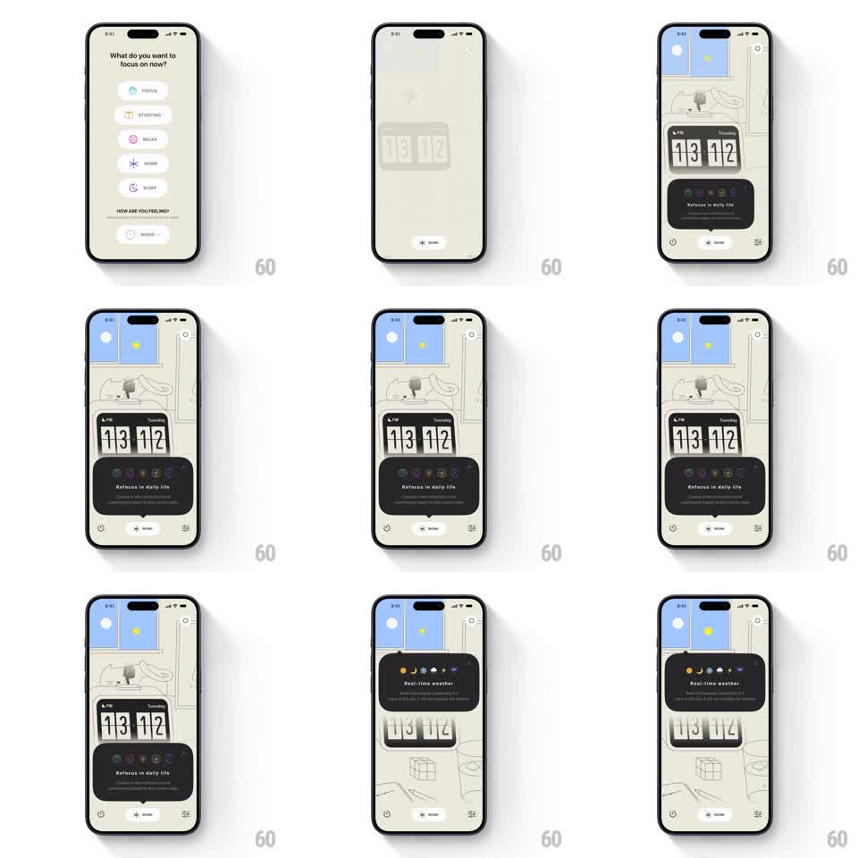

Media
Frame-by-frame

Rebuild this animation 1:1: a tooltip tour over an illustrated home screen - dark cards ("Refocus in daily life", "Real-time weather") spring into view one at a time, scaled up from their anchor with a pointer nub, then hand off to the next.

Rebuild this animation 1:1: a tooltip tour over an illustrated home screen - dark cards ("Refocus in daily life", "Real-time weather") spring into view one at a time, scaled up from their anchor with a pointer nub, then hand off to the next.
## Integration
Integration: stack-agnostic spec - springs given as stiffness/damping, timed motions as duration + curve; map every value to your framework and animation library of choice.
## Scene
Cream illustrated home screen: line-art room with a window (day sky with sun/moon dots), a flip-clock widget reading "13 12 / Tuesday", bottom control row. Tooltips are dark rounded cards with small colored icon dots and a pointer nub toward the element they describe.
## Motion spec
Pattern: sequenced springy tooltip tour.
- Each tooltip scales in from 0.6 with a spring (~320/20, ~350ms, slight overshoot) anchored at its pointer nub, fading in over the first 150ms.
- Tooltip 1 ("Refocus in daily life") sits low; it holds ~1.5s, then scales out (0.9, fade 200ms) as tooltip 2 springs in over the clock widget.
- Tooltip 3 ("Real-time weather") points at the window illustration, entering the same way.
- Between tooltips the flip clock flips a digit (300ms) and the window's sun dot drifts - the scene stays subtly alive.
- The screen's own controls never move; only tooltips enter/exit.
## Calibration
- One tooltip at a time - the next never enters before the previous exits.
- The pointer nub always aims at the real element (window, clock), anchoring the scale origin.
## Reduced motion
Tooltips fade in/out without scale.
## Don't miss
- Dark cards on cream illustration - the contrast is what guides the eye.
- Icon dots on each card use distinct colors per tooltip.